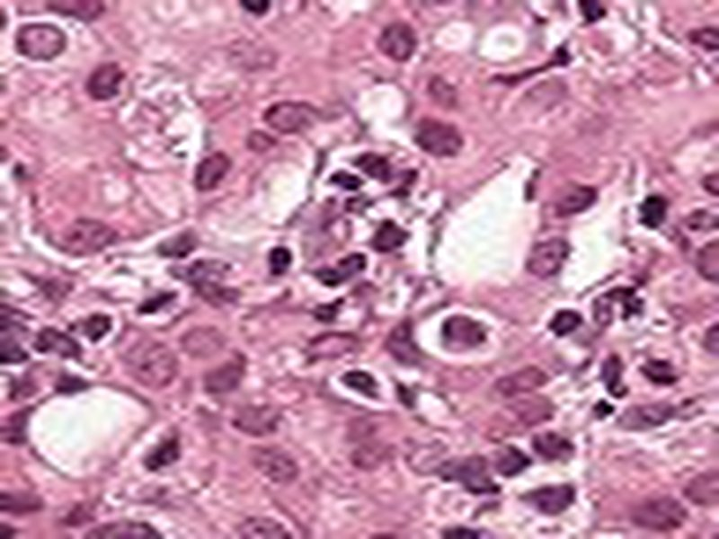
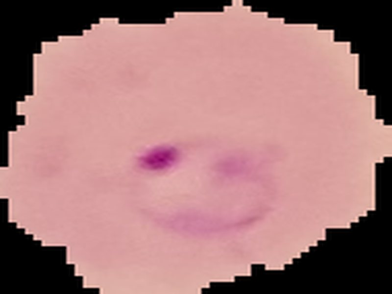
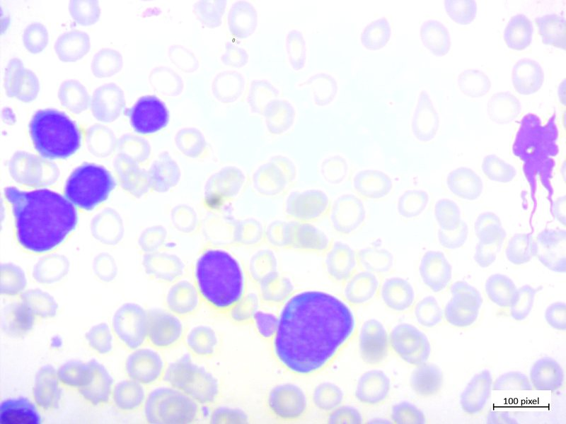

Institutional contact / WIT Solapur
Connect with the research office.
For questions about the WIT Research & Analysis platform, academic collaboration, or its applied microscopic diagnostics work, contact Walchand Institute of Technology directly.
ResponseInstitutional
LocationSolapur, MH
UseResearch / WIT

WIT Research & Analysis


01 / CONTACT DETAILS
Reach the lab
Use the details below for institutional enquiries, project context, or questions about the research and educational use of this prototype.
Phone
Campus
WIT, Solapur
Address
Walchand Hirachand Marg, Ashok Chowk, Post Bag No. 634, Solapur, Maharashtra - 413006
For collaborators
Make your enquiry useful.
When writing to the institution, include your affiliation, the module or research question you are interested in, and whether your request is academic, technical, or administrative.
- Academic affiliation or department
- Relevant disease pathway or method
- Short description of the intended use
Important context
A research prototype, clearly labelled.
The site supports education and experimentation. It does not accept clinical referrals, provide treatment advice, or replace professional medical evaluation.